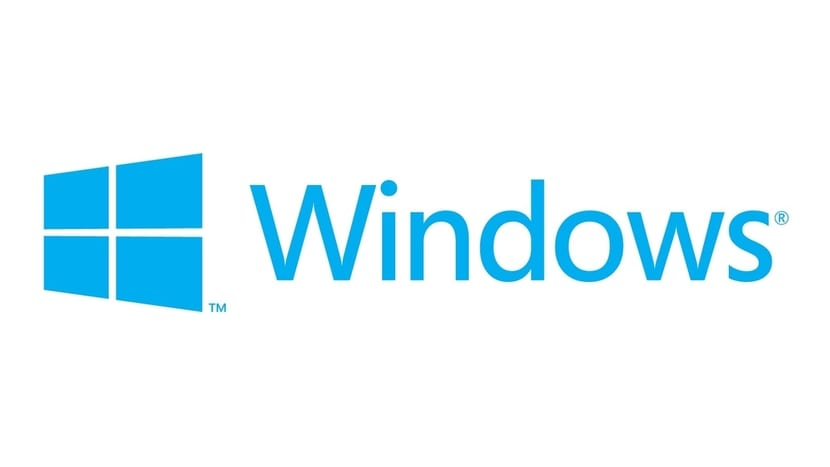

Windows es el nombre de una familia de distribuciones de software para PC, teléfonos inteligentes, servidores y sistemas empotrados, desarrollados y vendidos por Microsoft y disponibles para múltiples arquitecturas, tales como x86, x86-64 y ARM.
Desde un punto de vista técnico, no son sistemas operativos, sino que contienen uno (tradicionalmente MS-DOS, o el más actual cuyo núcleo es Windows NT) junto con una amplia variedad de software; no obstante, es usual (aunque no necesariamente correcto) denominar al conjunto como sistema operativo en lugar de distribución. Microsoft introdujo un entorno operativo denominado Windows el 20 de noviembre de 1985 como un complemento para MS-DOS en respuesta al creciente interés en las interfaces gráficas de usuario (GUI). Microsoft Windows llegó a dominar el mercado mundial de computadoras personales, con más del 90 % de la cuota de mercado, superando a Mac OS, que había sido introducido en 1984.
La versión más reciente de Windows es Windows 10 para equipos de escritorio, Windows Server 2019 para servidores y Windows 10 Mobile para dispositivos móviles. La primera versión en español fue Windows 2.1.
La primera versión se lanzó en 1985 y comenzó a utilizarse de forma generalizada gracias a su interfaz gráfica de usuario (GUI, Graphical User Interface) basada en ventanas. Hasta ese momento (y hasta mucho después como corazón de Windows), el sistema operativo más extendido era MS-DOS (Microsoft Disk Operating System), que por aquel entonces contaba con una interfaz basada en línea de comandos.
El 30 de septiembre de 2014, Microsoft presentó Windows 10, estando disponible desde ese día a usuarios avanzados que se suscribieran al programa Insider. Esta nueva versión del sistema operativo que llegó de forma oficial y gratuita a usuarios con licencia genuina de Windows 7, Windows 8 y Windows 8.1 así como a Insiders el 29 de julio de 2015, siendo la primera versión que busca la unificación de dispositivos (escritorio, portátiles, teléfonos inteligentes, tabletas y videoconsolas) bajo una experiencia común, con lo que se espera eliminar algunos problemas que se presentaron con Windows 8.1.